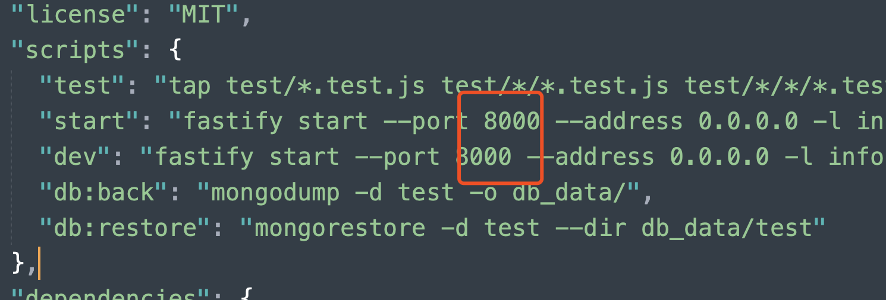

十次方 API 接口文档
本视频录制初期采用的是文件型数据库，后期考虑到课程升级及接口的扩展性，所以将数据库更换为了 MongoDB 数据库。所以有个别接口可能和视频中的接口不一致。但大体都是一样的的。所以请大家在学习的过程中一定以该接口文档中的接口为准。
更新说明
- 原接口中数据的属性
id在新版本中都统一为了_id
接口部署
安装 mongodb
- 下载 mongodb
- 安装方式
安装项目依赖
在终端中进入接口项目目录并执行以下命令
npm install
启动接口服务
npm run dev
注意：
- 启动服务之前务必保证先启动 mongodb 数据库
接口服务默认占用 8000 端口，如果 8000 端口被占用，解决方式如下：
方式一：关闭其他占用 8000 端口的服务
方式二：修改项目中的 package.json 文件中的端口号配置（见下图）

接口说明
基准路径
http://localhost:8000/api/v1/
请求数据格式
Content-Type 如无特殊说明，默认接受 application/json 格式数据。
使用 Postman 进行接口测试
安装
- 下载地址
- 安装
使用
用户
创建用户
POST/users
BODY
{
"username": "xxx",
"password": "xxx",
"nickname": "xxx"
}
根据用户 id 查询用户信息
GET/users/:userId
根据用户名查询用户
GET/users?username=xxx
根据昵称查询用户
GET/users?nickname=xxx
根据 url_token 查询用户
GET/users/url_token/:xxx
更新用户的 urlToken
PATCH/users/:userId/url_token
BODY
{
"urlToken": "xxx"
}
更新用户头像
PATCH/users/:userId/avatar
BODY
{
"file": "xxx",
"x": "xxx",
"y": "xxx",
"width": "xxx",
"height": "xxx"
}
用户注册
POST/users/signup
BODY
{
"email": "xxx",
"password": "xxx",
"nickname": "xxx"
}
用户登录
POST/users/signin
BODY
{
"email": "xxx",
"password": "xxx"
}
更新用户基本信息
PATCH/users/:userId/profile
BODY
{
"name": "xxx",
"birthday": "xxx",
"cellphone": "xxx",
"location": "xxx",
"skills": "xxx",
"gender": "xxx",
"website": "xxx",
"bio": "xxx"
}
更新用户密码
PATCH/users/:userId/password
BODY
{
"password": "xxx",
"newPassword": "xxx"
}
删除用户
DELETE/users/:userId
问题
创建问题
POST/posts
BODY
{
"title": "xxx",
"body": "xxx",
"tags": "xxx",
"userId": "xxx"
}
根据问题id获取问题
GET/posts/:postId
获取问题列表
GET/posts注：默认获取最新发布的问题
PARAMS
_page页码_limit每页大小filter筛选条件- hot 热门
- unresponsive 等待回复
tags标签
获取某个用户发布的问题
GET/posts?userId=xxx
获取某个用户回复过的问题
GET/users/:userId/comments/questions
更新问题
PATCH/posts/:postId
BODY
{
"title": "xxx",
"body": "xxx",
"tags": "xxx"
}
删除问题
DELETE/posts/:postId
回复
创建回复
POST/comments
BODY
{
"body": "xxx",
"userId": "xxx",
"postId": "xxx"
}
获取某个问题的回复数量
GET/comments/count?postId=xxx
获取某个问题的所有回复
GET/comments?postId=xxx
删除回复
DELETE/comments/:commentId
更新回复
PATCH/comments/:commentId
BODY
{
"body": ""
}
标签
获取标签列表
GET/tags
PARAMS
_page页码_limit每页大小
获取某个用户关注的标签
GET/tags/followers/:userId
根据标签名获取标签
GET/tags/:tagName
关注标签
POST/tags/:tagName/followers
BODY
{
"userId": "xxx"
}
投票
查询投票信息
GET/votes
PARAMS
- type
- 所属类型
- typeId
- 类型id
- userId
- 用户id
创建投票
POST/votes
BODY
{
"type": "xxx",
"typeId": "xxx",
"value": "xxx",
"userId": "xxx"
}
注：
- type 值为
posts或者comments- typeId 为 type 类型的 id
- value 可取的值为
0、1、-1
用户工作经历
创建工作经历
POST/works
BODY
{
"user": "xxx",
"company": "xxx",
"position": "xxx",
"startDate": "xxx",
"endDate": "xxx",
"city": "xxx",
"skills": "xxx",
"description": "xxx"
}
查询某个用户的工作经历
GET/users/:userId/works
更新工作经历
PATCH/works/:wordId
BODY
{
"company": "xxx",
"position": "xxx",
"startDate": "xxx",
"endDate": "xxx",
"city": "xxx",
"skills": "xxx",
"description": "xxx"
}
删除工作经历
DELETE/works/:workId
公共
文件上传
POST/upload
HEADERS
- Content-Type
multipart/form-data
BODY
- 字段任意，内容为文件即可